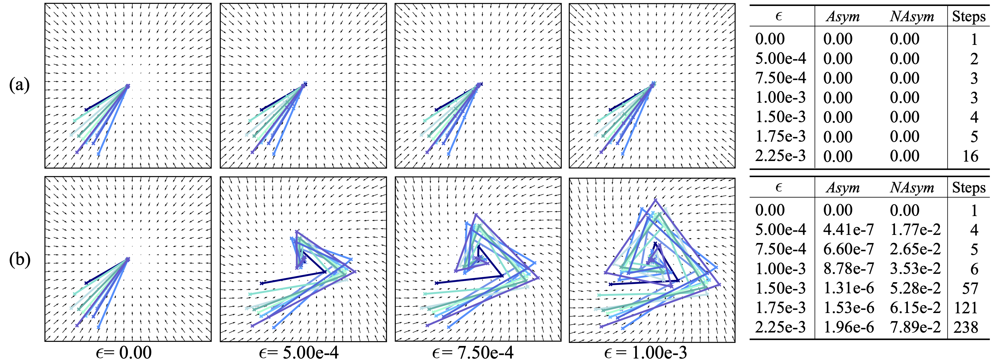
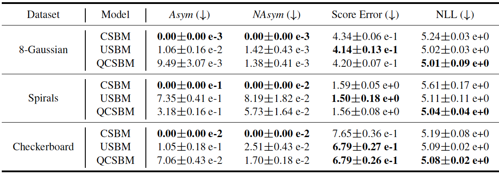
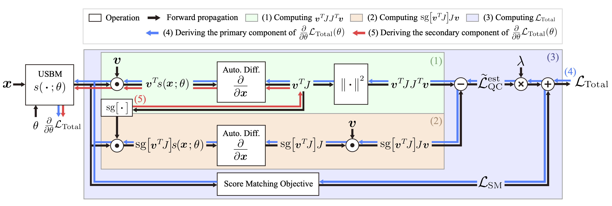
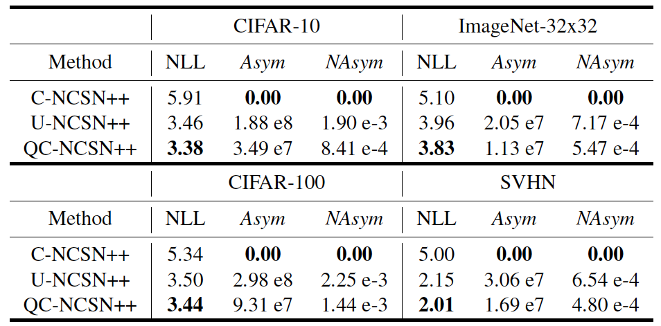
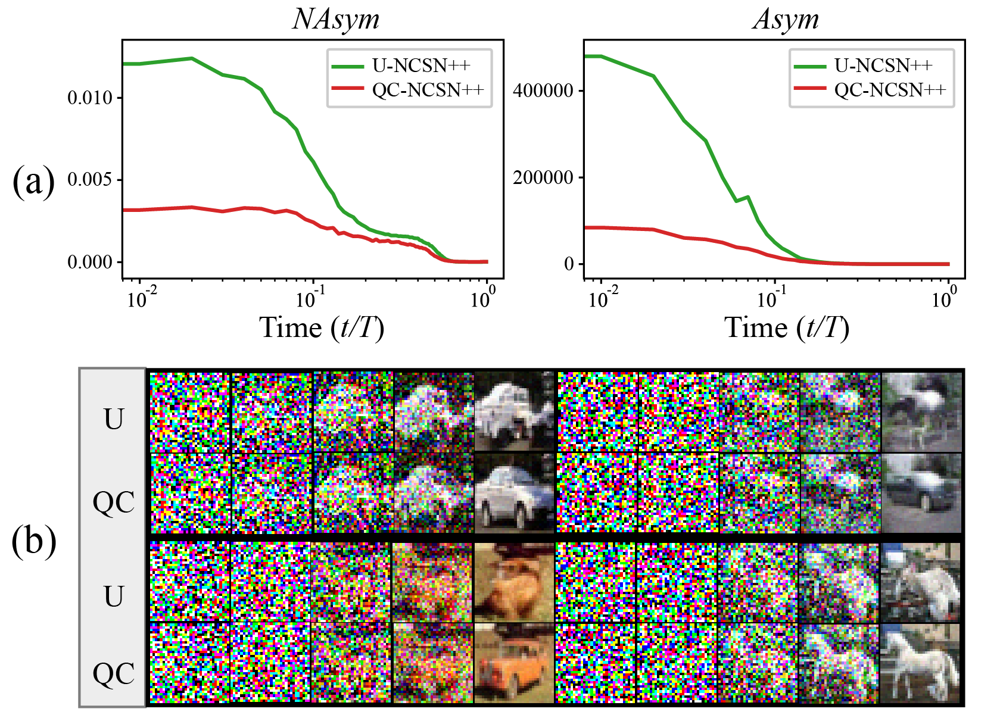
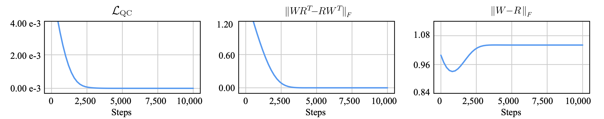

This blog post provides an introduction to our proposed QCSBM modeling method. The contents are essentially the same as our paper, but some redundant sections have been removed and some errors have been corrected. We start with motivational examples that examine the influence of the conservative property of score-based models. Next, we outline a training pipeline designed to backpropagate the conservativeness through the model. Finally, we present experimental results to demonstrate the effectiveness of our method. If you have any questions, please feel free to email Chen-Hao Chao. If you find this information useful, please consider sharing it with your friends.
The following paragraphs offer a background introduction and two motivational examples to highlight the importance of preserving this property in score-based and energy-based modeling methods.
▶Conservativeness: A vector field is said to be conservative if it can be written as the gradient of a scalar-valued function [1]. Let $s: \mathbb{R}^D \to \mathbb{R}^D$ be a vector field that accepts $D$-dimensional inputs. The vector field $s$ is said to be conservative if and only if its Jacobian is symmetric for all input vectors [1]. This condition can be equivalently expressed as the zero-rotation-density condition, as follows:
$$\bar{ROT}_{ij}s(\mathbf{x})=\frac{\partial s_i(\mathbf{x})}{\partial \mathbf{x}_j}-\frac{\partial s_j(\mathbf{x})}{\partial \mathbf{x}_i}=0,$$
where $1\leq i,j\leq D$, $\bar{ROT}_{ij}$ is the rotation density operator [2], and $\frac{\partial}{\partial \mathbf{x}_j} s_i(\mathbf{x})$ corresponds to the gradient of the $i$-th element of $s(\mathbf{x})$ with respect to the $j$-th element of $\mathbf{x}$. $\bar{ROT}_{ij} s(\mathbf{x})$ in the above equation describes the infinitesimal circulation of $s(\mathbf{x})$ around $\mathbf{x}$. Based on this definition, we can further define the "non-conservativeness" of a vector field as a smooth function that quantifies how a vector field deviates from the conservative property. The non-conservativeness is expressed as follows:
$$\frac{1}{2}\sum_{i,j=1}^D (\bar{ROT}_{ij}s(\mathbf{x}))^2=\frac{1}{2}\|J-J^T\|^2_F,$$
where $J=\frac{\partial}{\partial \mathbf{x}}s(\mathbf{x})$, $\|\cdot\|_F$ is the Frobenius norm. This quantity can be normalized to a range between 0 and 1 by dividing its value by $\frac{1}{2}\|J\|^2_F$. We refer to $\frac{1}{2} \|J-J^T \|^2_F$ and $\frac{1}{4}\|J-J^T\|^2_F/\|J\|^2_F$ as the asymmetry (Asym) and normalized asymmetry (NAsym) metrics, respectively, since they measure the asymmetry of the Jacobian matrix.
▶Score-based models (SBMs) estimate the gradients of log probability density functions (pdf) (i.e., $\frac{\partial}{\partial \mathbf{x}}\log p(\mathbf{x})$). SBMs can be adopted to generate samples through Langevin dynamics [3] or reverse diffussion processes [4,5]. There are two types of parameterization methods: constrained SBMs (CSBMs) or unconstrained SBMs (USBMs). The former parameterizes the pdf as a Boltzman distribution $p(\mathbf{x};\theta)=\exp (-E(\mathbf{x};\theta)) / Z(\theta)$, where $E(\cdot\,;\theta): \mathbb{R}^D \to \mathbb{R}$ represents a scalar-valued energy function and $Z(\theta)=\int \exp (-E(\mathbf{x}';\theta)) d\mathbf{x}'$ refers to the partition function. The output vector field of a CSBM can be represented as $s(\mathbf{x}; \theta) =\frac{\partial}{\partial \mathbf{x}} \log p(\mathbf{x};\theta)$. This implies that $s(\mathbf{x};\theta)$ is conservative. In other words, $s(\mathbf{x};\theta)$ satisfies the zero-rotation-density condition, since the mixed second derivatives of $E(\mathbf{x};\theta)$ are equivalent [6], which can be shown as the following:
$$\bar{ROT}_{ij}s(\mathbf{x})=\frac{\partial^2 E(\mathbf{x})}{\partial \mathbf{x}_i \mathbf{x}_j }-\frac{\partial^2 E(\mathbf{x})}{\partial \mathbf{x}_j \mathbf{x}_i}=0.$$
Unlike CSBMs, USBMs aim to directly parameterize the true score function using a vector-valued function $s(\cdot\,;\theta)$. The conservative property of USBMs is not guaranteed, as $s(\cdot\,;\theta)$ does not necessarily correspond to the gradients of a scalar-valued function. Although it is possible to ensure the conservative property of an USBM under an ideal scenario that $s(\cdot\,;\theta)$ perfectly minimizes the score-matching target, a trained USBM typically contains approximation errors in practice. This suggests that USBMs are non-conservative in most cases, and do not satisfy the zero-rotation-density condition.
▶Example 1 - The Influences of the Non-Conservativeness: The sampling processes of SBMs are formulated under a premise that $s(\mathbf{x};\theta)=\frac{\partial}{\partial \mathbf{x}}\log p(\mathbf{x})$. In practice, however, a trained USBM contains approximation errors, which could lead to its failure in preserving the conservative property. In this example, we inspect the impact of the non-conservativeness of USBMs on the sampling process by comparing the sampling efficiency of a USBM and a CSBM under the same score-matching error $\varepsilon$. In this example, the USBM and the CSBM are denoted as $s_U$ and $s_C$, and the method of constructing $s_U$ and $s_C$ are discussed in our paper.
 Figure 1. The visualized examples of (a) the conservative $s_C$ and (b) the non-conservative $s_U$ under different choices of $\varepsilon$. The table on the right-hand side reports the results measured using the Asym and NAsym metrics as well as the number of sampling steps. For a better data visualization, the vector fields are normalized with the maximum norm of $s_U$ and $s_C$ in each plot.
For an illustrative purpose, we present the visualization of the sampling processes as well as the evaluation results under different choices of $\varepsilon$ for two specific designs of $s_U$ and $s_C$ in Fig. 1 (a) and (b), respectively. As demonstrated in the visualized trajectories in Fig. 1 (b), the existence of the non-conservativeness in $s_U$ incurs rotational vector fields tangent to the true score function, leading to inefficient updates during the sampling processes. In addition, the evaluation results in terms of Asym, NAsym, and the number of sampling steps further reveal that $s_U$ requires more function evaluations during the sampling process than $s_C$ under the same score-matching error $\varepsilon$. The above experimental evidences thus demonstrate that the non-conservativeness of a USBM may decelerate the sampling processes, which, in turn, influences the sampling performance of it.
▶Example 2 - The Impacts of Architectural Flexibility: To ensure the conservative property of an SBM, previous works [7,8] proposed to construct the architecture such that its output vector field can be described as the gradients of a scalar-valued function. This design, however, potentially limits the modeling ability of an SBM. In this experiment, we empirically examine the influence of architectural flexibility on both the training and sampling. For a fair evaluation, a USBM $s_U$ and a CSBM $s_C$ are implemented as neural networks consisting of the same number of parameters. Following the approach described in [8], these two models are represented as follows:
$$s_U(\mathbf{x};\theta_U)=\frac{1}{\sigma} (\mathbf{x}-f(\mathbf{x};\theta_U)), \text{and } s_C(\mathbf{x};\theta_C)=-\frac{1}{2\sigma} \frac{\partial\|\mathbf{x}-f (\mathbf{x};\theta_C)\|^2}{\partial \mathbf{x}}.$$
where $\sigma$ is the noise scale used in denoising score matching, $f: \mathbb{R}^D \to \mathbb{R}^D$ is a neural network, and $\theta_U$ and $\theta_C$ are the parameters of $f$. The former is a USBM similar to that used in [5], while the latter corresponds to its conservative variant explored by [8].
 Table 1. The evaluation results of CSBMs, USBMs, and QCSBMs in terms of their means and confidence intervals of three independent runs on the "8-Gaussian," "Spirals," and "Checkerboard" datasets. The arrow symbols $\uparrow / \downarrow$ indicate that higher / lower values correspond to better performance, respectively. (NLL corresponds to Negtive Log Likelihood.)
Table 1 reports the results of the above setting. The columns "Score Error" and "NLL" in Table 1 demonstrate that the USBMs consistently deliver better modeling performance in comparison to the CSBMs, suggesting that their architectural flexibility is indeed beneficial to the training process. On the other hand, due to the potential impact of their nonconservativeness, USBMs are unable to consistently achieve superior results on the precision and recall metrics, as shown in the last two columns of Table 1. The above observations thus indicate that the architectural flexibility of a USBM is crucial to its score-matching and likelihood-matching abilities. Nevertheless, its non-conservativeness may cause negative impacts on its sampling performance as suggested in Example 1.
In this section, we introduce the objective of QCSBM and present an efficient implementation of it.
▶Objective Function: Instead of following the concept of CSBMs to ensure the conservativeness through architectural constraints, QCSBMs resort to penalizing the non-conservativeness through a regularization loss. The training objective for QCSBMs is defined as $L_{Total}$, which is expressed as follows:
$$L_{Total}=L_{SM}+\lambda L_{QC},$$
where $L_{SM}$ can be any one of the score-matching objectives, $L_{QC}$ represents the regularization term reflecting the non-conservativeness, and $\lambda$ is a balancing factor. As discussed in the background section, the nonconservativeness of a USBM can be measured using the magnitude of its rotation densities in the Frobenius norm, suggesting a formulation of $L_{QC}$ as:
$$L_{QC}(\theta)=\mathbb{E}_{p(\mathbf{x})}\left[\frac{1}{2}\|J-J^T\|^2_F \right].$$
This objective function, however, requires $D$ times of backpropagations to explicitly calculate the Jacobian matrix. In order to reduce the computational cost, we first derive an equivalent objective $L^{tr}_{QC}$, and then utilize the Hutchinson's trace estimator to approximate it. The loss $L^{tr}_{QC}$ is formulated as follows:
$$L^{tr}_{QC}(\theta)=\mathbb{E}_{p(\mathbf{x})}\left[tr(JJ^T) - tr(JJ) \right].$$
By applying the Hutchinson's trace estimator to both $tr(JJ^T)$ and $tr(JJ)$, $L^{tr}_{QC}$ can be re-expressed using an unbiased objective $L^{est}_{QC}$, which is defined as the following:
$$L^{est}_{QC}(\theta)=\mathbb{E}_{p(\mathbf{x})p(\mathbf{v})}\left[\mathbf{v}^TJJ^T\mathbf{v} - \mathbf{v}JJ\mathbf{v} \right].$$
▶Training Process: In this subsection, we walk through the proposed training procedure of QCSBMs. The training procedure and the corresponding computational graph is illustrated in Fig. 2. The entire training procedure is divided into five steps, denoted as Steps (1)~(5), respectively. Steps (1)~(3) describe the forward propagation process of $L_{Total}$, which is depicted by the black arrows in Fig. 2. Steps (4) and (5) correspond to the backpropagation processes of the two gradient components comprising $L_{Total}$, which are named the primary and secondary components, and are depicted as the blue and red arrows in Fig. 2, respectively. The detailed formulations for these two components and the rationale behind such a two-step backpropagation process are elaborated in our paper. Please note that the symbol $sg[\cdot]$ used in Fig. 2 represents the "stop gradient" operation, which is adopted to disconnect the computational graph.
 Figure 2. The computational graph of $L_{Total}$ in QCSBMs. The "Auto. Diff." blocks represent the operation of differentiating $\mathbf{u}^T s(\mathbf{x};\theta)$, where $\mathbf{u}$ is a constant vector with respect to $\mathbf{x}$.
We examine the effectiveness of the proposed QCSBMs on four real-world datasets: CIFAR-10, CIFAR-100, ImageNet-32x32, and SVHN datasets. We employ the unconstrained architecture as well as the training procedure adopted by NCSN++ (VE) [5] as our baseline, and denote this method as "U-NCSN++" in our experiments. On the other hand, C-NCSN++ and QC-NCSN++, which are variants of U-NCSN++ are compared against U-NCSN++ using the NLL, Asym, NAsym metrics. The details of the experimental setups are provided in our paper.
▶Likelihood and Non-conservativeness Evaluation: Table 2 reports the evaluation results of U-NCSN++, C-NCSN++, and QC-NCSN++ in terms of NLL, Asym, and NAsym on the four real-world datasets. The evaluation results of C-NCSN++ is inferior to those of U-NCSN++ and QCNCSN++ on the NLL metric, which aligns with our observation in the motivational examples, suggesting that the modeling flexibility is influential to the final performance on the NLL metric. In addition, we observe that the evaluation results on the NLL metric can be further improved when $L_{QC}^{est}$ is incorporated into the training process. As demonstrated in the table, QC-NCSN++, which achieves superior performance in terms of Asym and NAsym metrics, also has a noticeable improvement on the NLL metric.
 Table 2. The NLL, Asym, and NAsym of C-NCSN++, U-NCSN++, and QC-NCSN++ evaluated on the CIFAR-10, CIFAR-100, ImageNet-32x32, and SVHN datasets.
▶The Effects of Non-Conservativeness during Sampling: To further investigate the influence of non-conservativeness during the sampling process, we measure Asym and NAsym on the timestep-axis (i.e., $t$-axis), i.e., the nonconservativeness under different timesteps. As shown in Fig. 3, QC-NCSN++ delivers lower Asym and NAsym under different t in comparison to U-NCSN++. This result suggests that QC-NCSN++ can be less susceptible to its non-conservativeness during the sampling process. In our qualitative comparison presented in Fig. 4 (b), we observe that some examples generated using QC-NCSN++ have noticeably improved sample quality as compared to U-NCSN++.
 Figure 3. (a) The evaluation results of Asym and NAsym under different timestep $t$ on the CIFAR-10 dataset. (b) Examples generated by U-NCSN++ and QC-NCSN++ with the same random seed. ($T$ represents the total number of timesteps in the sampling process.)
▶QCSBM Implemented as a One-Layered Autoencoder: A line of research focuses on a type of SBM constructed as a one-layered autoencoder (e.g., [1]), in which the property of conservativeness can be systematically analyzed. Such an SBM is represented as $s(\mathbf{x};\theta) = \mathbf{R}h(\mathbf{W}^T\mathbf{x} + \mathbf{b}) + \mathbf{c}$, where $h$ is an activation function, $\mathbf{b}, \mathbf{c} \in \mathbb{R}^D$, $\mathbf{R},\mathbf{W} \in \mathbb{R}^{D \times H}$ are the weights of $s$ (i.e., $\theta = \{\mathbf{b}, \mathbf{c}, \mathbf{R}, \mathbf{W}\}$), and $H$ is the width of the hidden-layer. As proved in [1], the output vector field of $s$ is conservative if and only if $\mathbf{W}\mathbf{R}^T=\mathbf{R}\mathbf{W}^T$. To ensure the conservativeness of such an SBM, a number of previous works follow the concept of CSBMs and restrict the weights of $s$ to be "tied," i.e., $\mathbf{R}=\mathbf{W}$. An SBM with tied weights, however, is only a sufficient condition for its conservativeness, rather than a necessary one. This implies that there must exist some conservative $s$ that cannot be modeled using tied weights.
 Figure 4. The trends of $\|\mathbf{W}\mathbf{R}^T-\mathbf{R}\mathbf{W}^T\|_F$ and $\|\mathbf{W}-\mathbf{R}\|_F$ during the minimization process of LQC. The ‘steps’ on the x-axes refer to the training steps.
Instead of enforcing an SBM's weights to be tied, QCSBMs indirectly learn to satisfy the conservativeness condition through minimizing $L_{QC}$. Fig. 4 depicts the trends of $\|\mathbf{W}\mathbf{R}^T-\mathbf{R}\mathbf{W}^T\|_F$ and $\|\mathbf{W}-\mathbf{R}\|_F$ during the minimization process of $L_{QC}$. As the training progresses, the values of $\|\mathbf{W}\mathbf{R}^T-\mathbf{R}\mathbf{W}^T\|_F$ approach zero, indicating that $s$ learns to output a conservative vector field through minimizing $L_{QC}$. In contrast, the values of $\|\mathbf{W}-\mathbf{R}\|_F$ do not decrease to zero, revealing that minimizing $L_{QC}$ does not necessarily lead to $\mathbf{R} = \mathbf{W}$. The experimental results thus suggest that QCSBMs can learn to output conservative vector fields that cannot be modeled by one-layered autoencoders with tied weights. This justifies the advantage of QCSBMs over CSBMs, as QCSBMs provide a more flexible parameterization while still maintaining their conservativeness.
[1] D. J. Im, M. I. Belghazi, and R. Memisevic. Conservativeness of Untied Auto-Encoders. In Proc. the AAAI Conf. on Artificial Intelligence (AAAI), 2016.
[2] E. Glotzl and O. Richters/ Helmholt. Decomposition and Rotation Potentials in n-Dimensional Cartesian Coordinates. arXiv:2012.13157v3 [math.PH], 2021.
[3] G. O. Roberts and R. L. Tweedie. Exponential Convergence of Langevin Distributions and Their Discrete Approximations. Bernoulli, 2(4):341-363, 1996.
[4] J. Ho, A. Jain, and P. Abbeel. Denoising Diffusion Probabilistic Models. In Proc. the Advances in Neural Information Processing Systems (NeurIPS), 2020.
[5] Y. Song, J. Sohl-Dickstein, D. P. Kingma, A. Kumar, S. Ermon, and B. Poole. Score-Based Generative Modeling through Stochastic Differential Equations. In Proc. Int. Conf. on Learning Representations (ICLR), 2021.
[6] G. Alain and Y. Bengio. What Regularized Auto-Encoders Learn from the Data-Generating Distribution. The Journal of Machine Learning Research (JMLR), 15(1):3563-3593, 2014.
[7] S. Saremi, A. Mehrjou, B. Scholkopf, and A. Hyvarinen. Deep Energy Estimator Networks. arXiv:1805.08306v1 [stat.ML], 2018.
[8] T. Salimans and J. Ho. Should EBMs Model the Energy or the Score? In Proc. the Energy Based Models Workshop at Int. Conf. on Learning Representations (ICLR), 2021.
@inproceedings{chao2023investigating,
title={On Investigating the Conservative Property of Score-Based Generative Models},
author={Chen-Hao Chao and Wei-Fang Sun and Bo-Wun Cheng and Chun-Yi Lee},
year={2023},
booktitle={International Conference on Machine Learning (ICML)},
}